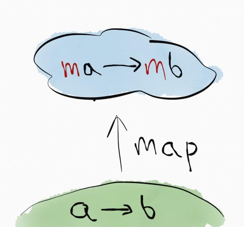
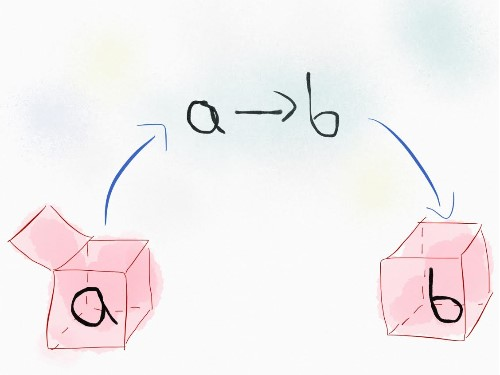

val compose : f:('a -> 'b) -> g:('b -> 'c) -> x:'a -> 'c
Full name: index.compose
Full name: index.compose
val f : ('a -> 'b)
val g : ('b -> 'c)
val x : 'a
val app : obj
Full name: index.app
Full name: index.app
Funkcyjna kompozycja
Higher Order Functions
Compose
1: 2: 3: |
|
Elevated World


Functor
1:
|
|
Functor
List
1:
|
|
Functor
Option
1:
|
|
Functor
Task
1:
|
|
Podejście 1

Podejście 2

Przestrzeganie reguł
Prawo toższamości
Identity law
Zapewnia, że functor nie będzie robił, żadnych dodatkowych zmian i efektów ubocznych. Zmiany robi tylko aplikowana funkcja.
1:
|
|
Prawo kompozycji
Composition law
Zapewnia, że implementacja functora nie będzie łamała kompozycji funkcji
1:
|
|
Applicative
1: 2: |
|
Monad
1:
|
|
Bonus : Kleisli
1:
|
|
Suave / Giraffe
1: 2: 3: 4: 5: |
|
Podsumowanie
1: 2: 3: |
|
Ale koduję w C#
Jak tu żyć?
Funkcyjny C#
Polecam F# ;)

Linki
Nauka F#
http://fsharpforfunandprofit.com/
Teoria Kategorii dla Programistów https://github.com/hmemcpy/milewski-ctfp-pdf